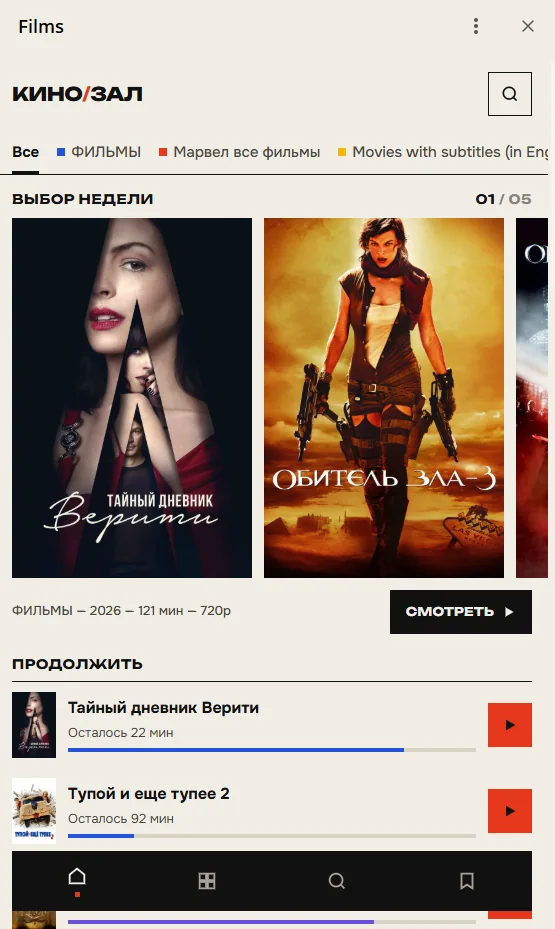
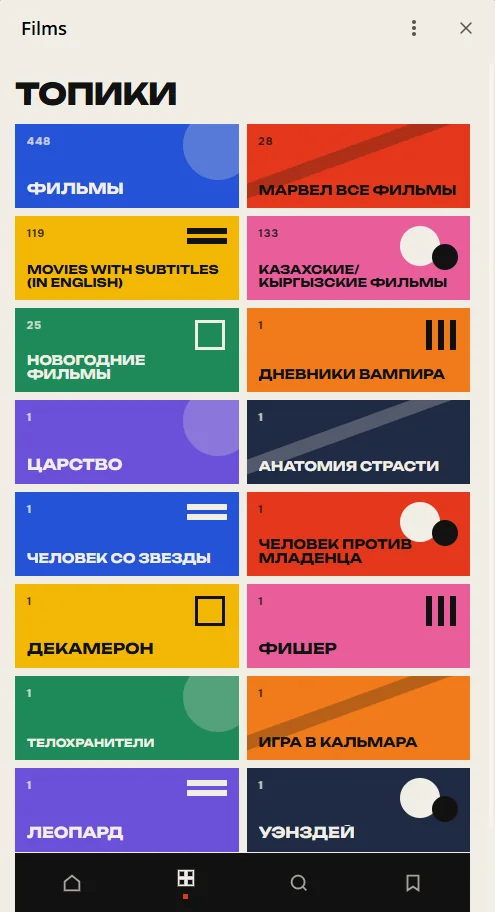
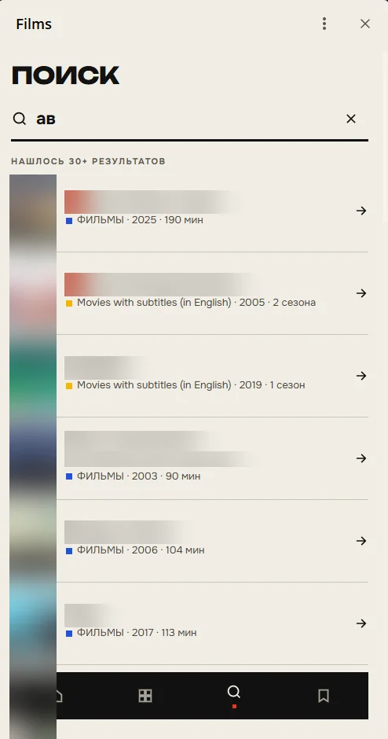
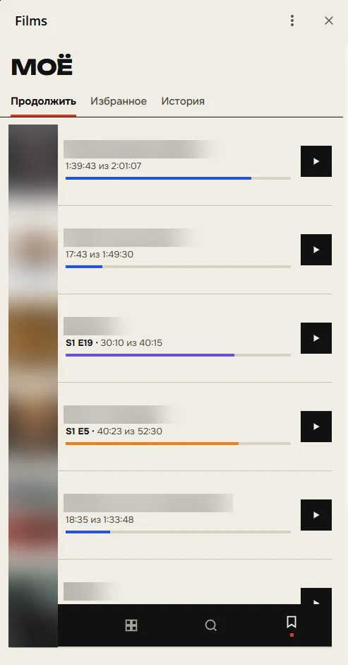
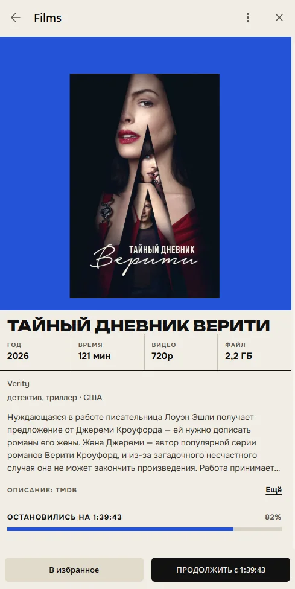
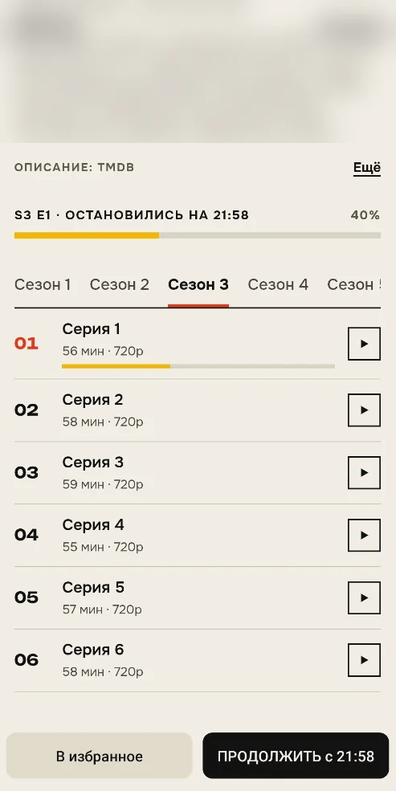
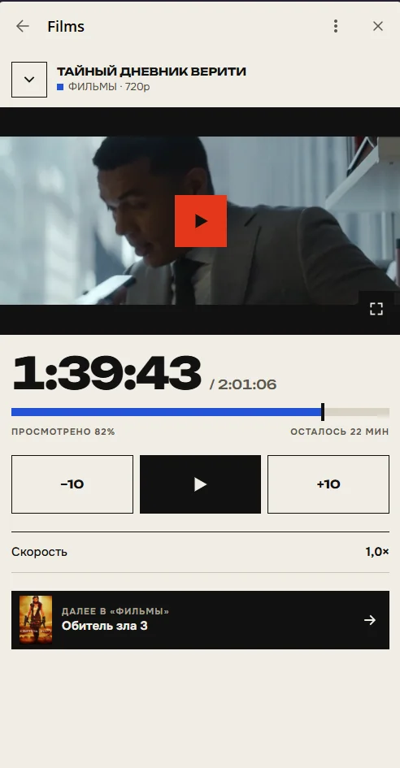
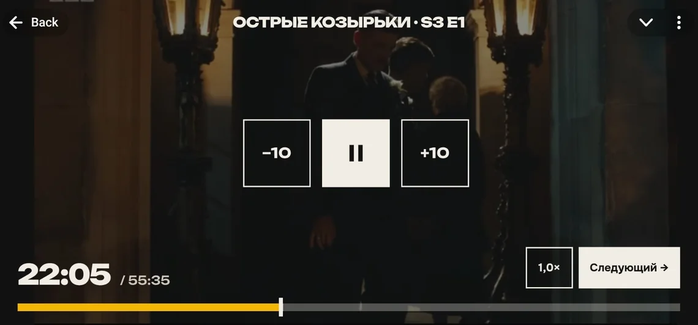

Кинозал
Telegram Mini App, который превращает видео из Telegram-группы в аккуратный кинозал: афиша с постерами, поиск, жанры, сезоны и серии — а видео сразу играет прямо в Telegram.
Проект показан как пример работы — открытого доступа нет.

Зачем это
В Telegram-группе видео быстро превращаются в длинную ленту: нужный фильм не найти, серии перемешаны, а где остановился — непонятно. Кинозал раскладывает всё по полочкам, как в кинотеатре: постеры, поиск, жанры, сезоны и серии. Видео запускается за пару секунд прямо в Telegram, без скачивания, и продолжается с того места, где вы остановились.
Как выглядит
Реальные экраны приложения.
Главная 
Топики 
Поиск 
Моё: продолжить, избранное, история 
Карточка фильма 
Сезоны и серии 
Плеер

Главные фишки
-
Афиша с постерами
У каждого фильма — постер, описание и жанр. Подборка «Выбор недели», темы и поиск по названию.
-
Сериалы по полочкам
Серии сами раскладываются по сезонам и идут по порядку — следующую искать не нужно.
-
Продолжить с места
Кинозал помнит, где вы остановились, и показывает, сколько осталось до конца.
-
Быстрая перемотка
Видео грузится небольшими частями, поэтому старт и перемотка занимают пару секунд.
-
Светлая и тёмная тема
Оформление само подстраивается под тему Telegram — днём и ночью.
-
Избранное
Отложите фильм или сериал на потом — он будет ждать во вкладке «Моё».
Как это работает
Три шага от видео в группе до афиши. Всё происходит само, без ручной разметки.
-
01 · распознаёт
Находит видео
Находит видео в группе и понимает, какой это фильм или какая серия.
-
02 · оформляет
Собирает афишу
Добавляет постер и описание из открытых баз о кино и раскладывает по жанрам.
-
03 · показывает
Играет по частям
Отдаёт видео небольшими частями, поэтому оно стартует за пару секунд.
Когда зрителей много, новые ненадолго встают в очередь: «Сейчас много зрителей. Вы в очереди — начнём через ~1 мин».